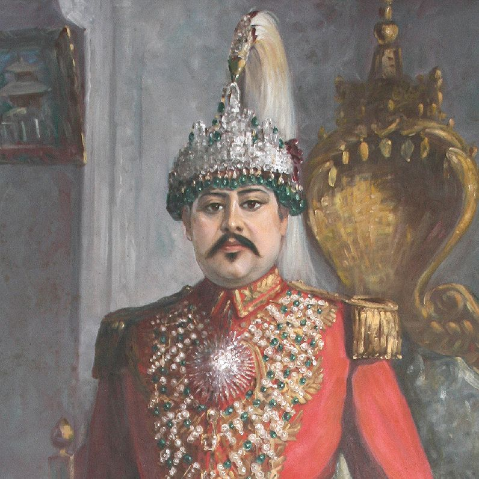

Prithvi Bir Bikram Shah Dev
Biography:
Prithvi Bir Bikram Shah Dev was born on 18 August, 1875 in Basantapur, Nepal.
He was the son of Trailokya Bikram Shah Dev and Lalit Rajeshwori Rajya Lakshmi Devi.
He was the seventh King of Kingdom of Nepal from 17 May, 1881 to 11 December, 1911.
He died at the age of 36 on 11 December, 1911 in Kathmandu, Nepal.